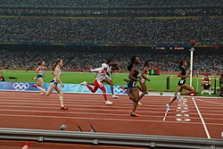

SPORT
Sport – wszelkie formy aktywności fizycznej, które przez uczestnictwo doraźne lub zorganizowane wpływają na wypracowanie lub poprawienie kondycji fizycznej i psychicznej, rozwój stosunków społecznych lub osiągnięcie wyników sportowych na wszelkich poziomach. Za sport uważa się również współzawodnictwo oparte na aktywności intelektualnej, którego celem jest osiągnięcie wyniku sportowego.

- Rodzaje sportu
-
- sport amatorski – aktywność fizyczna podejmowana dla wypoczynku, rozrywki i rekreacji – odnowy sił psychofizycznych,
- sport wyczynowy – forma działalności człowieka, podejmowana dobrowolnie w drodze rywalizacji dla uzyskania maksymalnych wyników sportowych,
- sport profesjonalny – rodzaj sportu wyczynowego uprawianego w celach zarobkowych
- motorsport – sport rozumiany jako rywalizacja w innych językach] zawodników na pojazdach silnikowych.
Ćiekawostki
W ramach rekreacji, rozumianej tu jako odrębne pojęcie, brak jest elementu rywalizacji. Różne realizowane w jej ramach czynności, poza pracą czy nauką, są wykonywane w miejscu zamieszkania czy pobytu, co różni ją z kolei od turystyki – podróży w celu poznawania świata i ludzi.= W niektórych ujęciach sport to również kultura fizyczna, dbanie o własne ciało, podziwianie piękna zawodników uprawiających dane dyscypliny sportu.